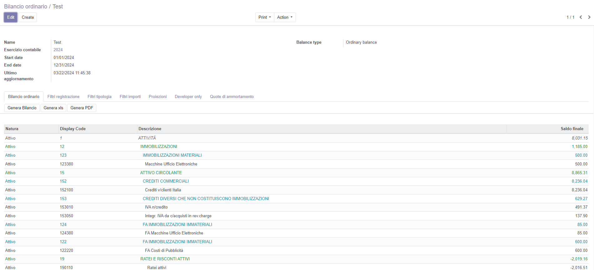

Account balance

Bilancio fiscale italiano



This software makes available three different kind of balance sheet:
It designed for Italian enterprises but may be useful for other countries companies.

Bilancio fiscale e legale per le imprese italiane.
Questo modulo permette di generare il bilancio fiscale di un'azienda secondo le normative italiane. Sono disponibili 3 modelli di bilancio:
Sono forniti numerosi filtri di selezione e stampa che permettono di adattare il bilancio a tutte le esigenze fiscale e gestionali di un'impresa italiana.
Il software permette anche di effettuare la proiezione dei ratei e dei risconti. Per ottenere questa funzione è necessario installare il modulo di registrazione date di competenze.


Configuration items:
Invoicing » Accounting » Profilo contabile
Invoicing » Setting » Link profilo contabile

Elementi di configurazione:
Fatturazione » Contabilità » Profilo contabile
Fatturazione » Impostazioni » Collegare il profilo contabile


Menu:
Invoicing » Reporting » Contabiltà Italiana » Bilanci fiscali » Bilancio di verifica
Invoicing » Reporting » Contabiltà Italiana » Bilanci fiscali » Bilancio Ordinario
Invoicing » Reporting » Contabiltà Italiana » Bilanci fiscali » Bilancio a sezioni contrapposte

Menù:
Fatturazione » Rendiconti » Contabiltà Italiana » Bilanci fiscali » Bilancio di verifica
Invoicing » Reporting » Contabiltà Italiana » Bilanci fiscali » Bilancio Ordinario
Invoicing » Reporting » Contabiltà Italiana » Bilanci fiscali » Bilancio a sezioni contrapposte
Authors | Autori:
Contributors | Partecipanti:
This module is maintained by the SHS_AV s.r.l..
This module is part of l10n-italy-supplemental project.
Published information on | Informazioni pubblicate: 2024-03-22